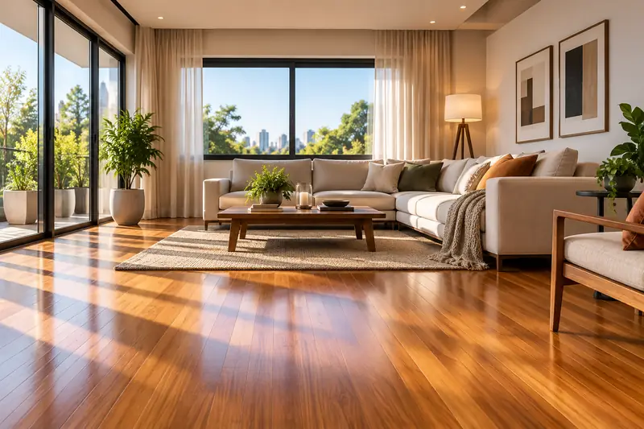
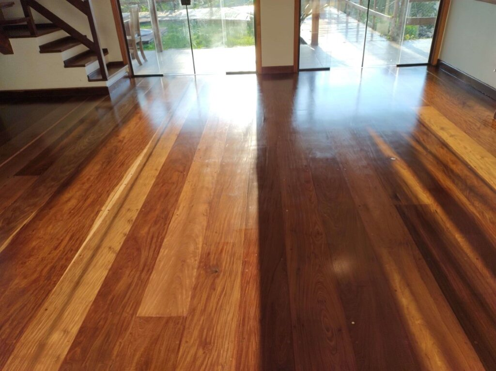
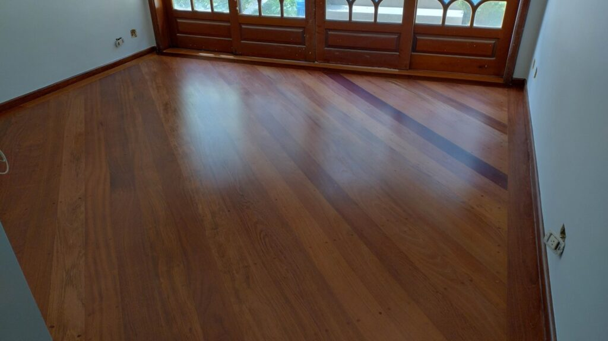
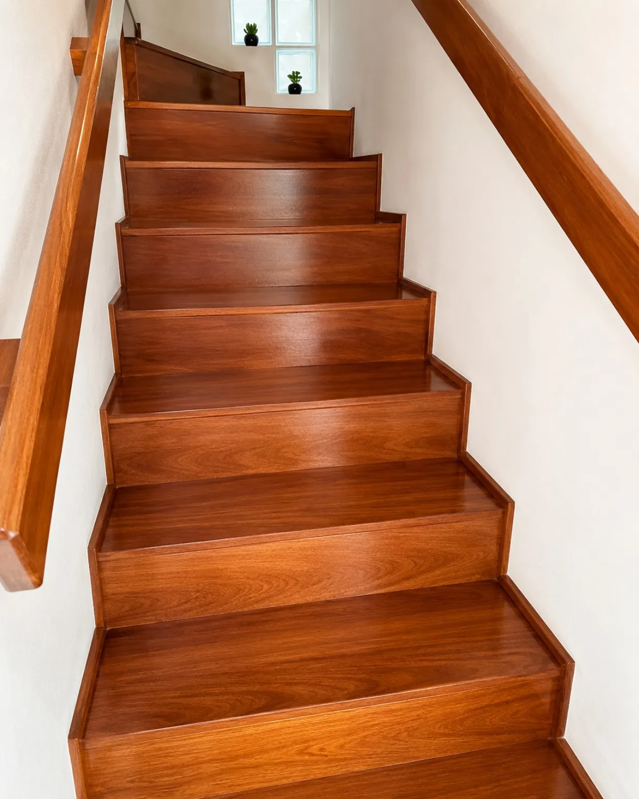

Raspagem
Remoção controlada do acabamento antigo, riscos e desgastes para nivelar a madeira.
São Paulo e região
Raspagem, calafetação e aplicação de resinas profissionais para recuperar tacos e assoalhos com cuidado em cada detalhe.
Perfeito. Para uma avaliação inicial, envie fotos, metragem aproximada e seu bairro.
Continuar no WhatsApp
Solução completa
Primeiro avaliamos as condições do piso. Depois indicamos o processo e o acabamento adequados ao ambiente e à rotina.
Remoção controlada do acabamento antigo, riscos e desgastes para nivelar a madeira.
Tratamento das juntas e frestas para recuperar a uniformidade visual do piso.
Preparação fina da superfície para receber o novo acabamento com regularidade.
Aplicação da resina mais adequada ao uso, tráfego e resultado desejado.



Projetos realizados
Atendemos apartamentos, casas, escritórios e outros espaços. Cada resultado parte de uma avaliação do piso para definir preparo, correções e acabamento.
Avaliações reais
“Atendimento rápido e equipe atenciosa. Serviço dentro do prazo, muito bem feito e com ótimo acabamento.”
“Ótimos profissionais. Rápidos, limpos e de confiança. Amamos nosso novo taco.”
“Bom custo-benefício, serviço pontual e resultado excelente. Trabalho caprichoso e limpo.”
Antes de começar
Cada piso pede uma avaliação própria, mas estas respostas ajudam você a se preparar.
A raspagem usa equipamento profissional com sistema de aspiração, que reduz significativamente a dispersão de pó no ambiente.
Em geral, a área precisa estar livre para que o tratamento seja uniforme. A equipe orienta a melhor organização após avaliar o espaço.
O prazo depende do produto aplicado, ventilação e condições do ambiente. A orientação exata é informada para o acabamento escolhido.
A Millenium atende São Paulo e região. Envie seu bairro ou cidade no WhatsApp para confirmar a disponibilidade.
Avaliação inicial
Tenha em mãos a metragem aproximada e o bairro ou cidade. Com isso, nossa equipe consegue entender melhor seu projeto.
Solicitar orçamento no WhatsApp